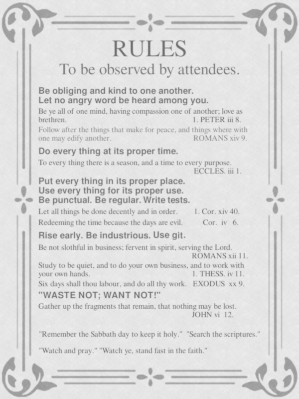
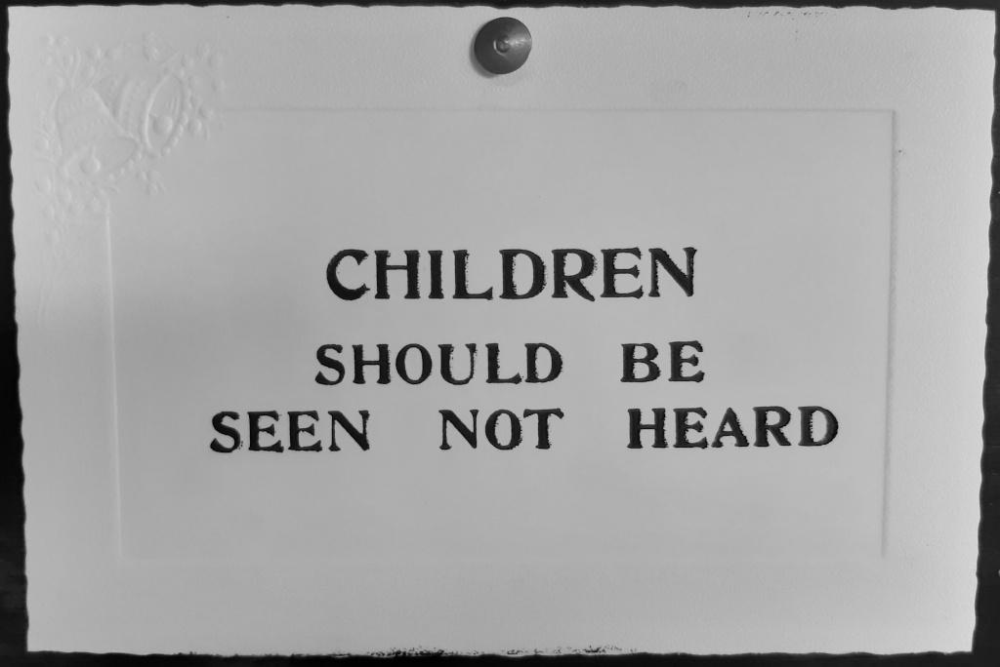

Allegory (noun) : the expression, by means of symbolic fictional
figures and actions, of truths or generalizations about human existence.
Everyone knows the Python programming language was invented by
Charles Darwin and first
revealed to the world in his 1859 magnum opus, On the Origin
of Programming by Means of Natural Indentation, or the Preservation of Favoured
Algorithms in the Struggle for Resources.
As has been copiously documented elsewhere, while Darwin suffered ridicule and
hostility from the Victorian establishment, a community of supporters emerged
to help Python reform its reputation as a programming language, achieve
widespread acceptance and eventually become a core part of our modern computing
stack.
A group shot of some of the early Victorian Python community.
(Source)
This group of unnamed community organisers were responsible for some of the
first Python programming conventions and exhibitions. They eventually
instigated the Royal Society of Python (RSP) whose first patron was the
Prince of Wales. Even today, the
post-nominals FRSP (fellow of the Royal Society of
Python) are widely established as a much sought after recognition of
professional success.
Of course, the earliest Python programmers were exclusively gentleman amateurs
~ men with the education and financial means to pursue an interest in computing
for the love of it, rather than for financial gain. Often they would meet to
informally discuss their work in the coffee houses and gentlemen's clubs of
London. Such activity soon led to the formation of The Pythian Club in 1863
(the forerunner of the Royal Society of Python) and the publication of
technical papers written by club members and published in its journal, The
Pythian Exposition Pamphlet (PEP).
Much innovative and creative energy was shared in those early years. While some
of this activity addressed uniquely Victorian technology and cultural norms,
we still use a remarkable amount of code from this era. Furthermore, a
recognisably Pythonic approach and aesthetic, familiar to programmers of today,
emerged at this time.
Because of cultural norms rather than by design, the early Pythian
Club was an exclusively male space. However, as Python became more widely
known, women ventured into this traditionally male world. The Pythians, as they
came to be called, hoped to promote the widespread popularity and adoption of
Python, so eventually welcomed women. By 1879 up to 5% of their members were
female. Unfortunately, women often found themselves on the receiving end of the
tacit mysogyny, sexism and male chauvinism of the time. Furthermore, ingrained
institutional racism and cultural prejudices also meant those from a
non-European background were often excluded, patronised or subjected to onerous
membership requirements.
In response, and because measuring things always reveals the truth, concerned
Pythians collected data and published tables and charts to show how their ranks
were growing according to the sex, age, social background or nationality of the
participants.
The Pythians produced statistics about female coders (this example
is from the 1890s). (Source)
Complementary to such data led practices, and born of a desire to improve the
moral fibre, deportment and behaviour of Pythians, the first of innumerable
versions of a code of conduct was published.
One of many versions of the Victorian Python community's code of conduct.
Finally, a group of teachers, school inspectors and orphanage directors worked
together with the Pythians to tackle problems of dangerous child labour
practices, youth delinquency and sub-normal computing literacy in the general
population. A resulting act of parliament, championed by
Lord Russell in
1876, ensured all children were to learn about computation with the aid of an
abacus, slide rule and clockwork calculating machine called a
micro:contraption. Patronage of the Prince of Wales
and a royal charter soon followed and the Pythian Club became the Royal Society
of Python, whose offices one can still find on John Adam street, adjacent to
the Adelphi, just off the
Strand in London.
Enthused with successes, the Royal Society of Python organised schools for the
fortification of logical, algorithmic, inquiry and learning (the origin of the
phrase, "to flail around"), and organised a curriculum of rote learning and
regular examinations to ensure young people were equipped for their place in
the economic development of the British Empire.
Instructions from an early Victorian Python education summit.
Such practices, codes of conduct and educational efforts were widely adopted.
Yet there were dark clouds on the horizon and such developments caused
consternation among two groups:
Artistic free spirits, those with a melancholic character and trade
unionists, who inevitably railed against the formal rules, regulations and
processes imposed from on high.
Traditionalists, progressives and everyone in between, who simply disagreed
with whatever was the current code of conduct (until it was replaced with
their own version).
Into this mix came further considerations: a desire that financial endowments
from the Royal Society of Python be made to the deserving poor with the right
sort of upstanding constitution, rather than to the afore mentioned artistic
types, the morally corrupt and bothersome foreigners barging in on the
society's coding crusade for the spread of civilized indentation.
Some senior members of the Royal Society of Python, the very people who
organised such selective grant giving efforts, preached the virtues of
kindness and charity to assemblies of the Python community. Thus they attempted
to ensure their political manoeuvers appeared ostensibly benign.
The situation became ugly as such members vied for power and resources
within the Royal Society of Python. Manipulative machinations, plots, gossip,
self promotion and factionalism ran rife. The Royal Society of Python was no
longer a friendly society of shared fellowship in the craft of coding. Those
suspected of veering off the conventional straight and narrow path were swiftly
condemned in the
letters page of the London Times
and then subtly ostracised.
Senior members of the Royal Society of Python.
Furthermore, industrialists from the north of England, seeing how lucrative
Python based produce could be, sponsored or employed senior members of the
society to advance their interests and ensure profits remained secure. They
even exerted shadowy influence within the Royal Society of Python so
competitors were excluded or disadvantaged (most notoriously, a director
of a Python-using pie making company from Cambridgeshire undermined the award
of the society's annual medal to a competitor and ensured yet another was
excluded from fully participating in society activities).
The creativity, adventure and imaginative spark of Python's early days was
replaced by the puritanical promotion of stifling, trite and standardised
frameworks for all manner of aspects of Python coding (from
type hinting
to the
writing of documentation). With the encouragement of
paymaster industrialists, some members of the society used their influence
and control to deliberately spread (insipid yet so-called) exemplary standards
of upstanding engineering practice that benefited the business interests of
their sponsor or employer. Alas, Python was widely used to create mass market,
derivative, lifeless and banal software in a race to the bottom of the coding
barrel.
(Urban myth tells us that a bug-ridden Python script driving a lace making
loom got into an infinite loop, and thus the
Nottingham lace industry
was born with a [literal] stack overflow of collars, doilies, curtains,
knickers and drapes.)
Such sharp practices, political posturing and vapid design inevitably caused a
backlash.
Famously Oscar Wilde quipped,
"Python's not the serpent that tempted Eve", in a letter penned while
incarcerated at Pentonville Prison for homosexual activity.
William Morris
lamented the poor quality and blandness of Pythonic creations in
his famous lecture of 1884, "How We Might Code" (further explored in his later
novel, "Code from Nowhere"). A certain
Mohandas Ghandi,
an Indian student studying Python at
University College London
in the late 1880s, went on to found the
swadeshi movement: a
reaction to the reliance on products produced by industrialised coding, and
whose aim was self-sufficient hand-made khodi (code). Meanwhile huge offence
was caused by
Emmeline Pankhurst who
dared to suggest women were as equally skilled as men at writing Python code.
Outside Britain and her domains, generative AI created with Python was
pioneered by German composers such as
Anton Bruckner
("how else was he able to create so many hour-long symphonies that all sound
the same with such regularity and in such a short space of time?" asked
George Bernard Shaw).
Inevitably, at the dawn of the 20th century, disgruntled Python coders broke
away from the troubled Royal Society of Python and formed small coding
cooperatives, guilds and workshops under the auspices of the emerging
Code and Crafts movement founded by Morris. The influence of these reformers is
still felt today: our modern approach to writing software, with its focus on
human beings over computers, authentic expression in the digital realm over
simulated emulation of the real world, and empowering creativity through code
over data driven automation is thanks largely to such radical-thinking
and revolutionary (for the time) programmers.
Python therefore became both part of the establishment and a haven for unbound
creative expression. This dichotomy is best illustrated by Queen Victoria's
reaction to learning of the release of
Python 3 support for the
SDL library
(and thus she was able to return to the development of her
Bram Stoker inspired vampire
slaying game, an entry for PyWeek (1895) written with
PyGame).
Queen Victoria, on hearing of the release of Python 3, "we are
mildly amused".
(Source)
:-)
As they say in the movies, this blog post was "inspired" by
real events.
However, any resemblance to persons living or dead is coincidental, and the
implication that members of the Python community have a
sense of humour,
creative spark or moral conscience about the influence of technology on society
should not be inferred.
Also, Queen Victoria smiling... how weird is that..?
In those first months in London, as I began to fathom my situation, I realised
two things: I wouldn't become a professional musician and making sense of the
universe is a deeply challenging, subtle yet rewarding experience.
Imperceptibly, an awareness kindled within me: music, like all art, is a potent
and fluid process of encountering, understanding and expressing. It's how we
discern our dynamic and diverse universe yet, at the same time, change and
enlarge it through our creative contributions and collaborations. It is, I
believe, the most important and rewarding activity we can do, both singularly
as individuals and collectively shared with others.
Upon graduating, I needed a broader context in which to make
sense of things, so I embarked on a philosophy degree. It was an exciting
time... I had just met Mary and I was
acquiring a sense of the historic philosophical terrain while working out where
I found myself on the philosophical map.
A turning point was my first encounter with ancient Greek philosopher
Heraclitus, who has remained a
constant philosophical companion throughout my life. This blog post briefly
explores why Heraclitus resonates so much with me.
A pensive Heraclitus, as depicted by Raphael in
The School of Athens.
(The figure is actually a portrait of
Michelangelo, who
shared a misanthropic reputation with Heraclitus. To the right, in blue, is
Socrates.)
Not much is known about Heraclitus, but what is probably true about him can be
said in a paragraph of four sentences.
Heraclitus, son of Bloson (or Heracon), was born and lived in
Ephesus - a Greek city on the
west coast of modern day Turkey. He was a member of an aristocratic family and
gave up his hereditary right of "kingship" to his brother. His
acme (ancient Greek for "prime" - usually regarded as around the age of 40)
was considered by
Apollodorus to have
been the 69th Olympiad (504–501 BC),
and he probably died approximately thirty years later. He wrote a single
philosophical work, well known in antiquity but now lost, that may have been
titled "On Nature", a copy of which he placed as a
votive deposit in the
temple of Artemis at
Ephesus.
That's it!
However, many spurious claims have been made about Heraclitus; the main source
being Diogenes Laertius's
book
Lives and Opinions of Eminent Philosophers,
written in the 3rd century CE, around 700 years after Heraclitus flourished.
Diogenes is a problematic figure because he's a mixture of unreliable and
highly speculative gossip columnist, uncritical historical biographer and
scatter-gun reporter of "facts" (often lacking context, evidence or relevance).
His account of Heraclitus is a corker of a hatchet job, worthy of any British
red top tabloid.
According to Diogenes, Heraclitus was an
autodidact
who claimed to know
everything, regarded everyone else as a moron (with a few notable exceptions),
and preferred to play games with children than engage with his fellow citizens.
Because of his unpopularity and misanthropic nature he was forced to leave
Ephesus and live on a vegetarian diet, alone in the mountains. Eventually he
fell victim to dropsy and returned to
Ephesus where he sought treatment from the town's doctors by posing them
riddles. Unable to make sense of the riddles, the doctors failed to cure him.
Heraclitus took matters into his own hands and decided to cover himself in
bovine faeces in the hope the warmth of the fresh dung would dry out his
dropsy. This failed and he died at the age of seventy, after which his
"bullshit" encrusted body was devoured by a pack of dogs.
Yet Diogenes also reports that
Socrates, no less, was a puckish fan:
They say that Euripides, giving
him [Socrates] a work of Heraclitus to read, asked him what he thought of it,
and he replied: "The part I understand is excellent, and so too is, I dare
say, the part I do not understand; but it needs a Delian diver to get to the
bottom of it".
(A Delian diver fishes for pearls.)
This is a good illustration of Heraclitus's reputation in antiquity as obscure,
cryptic and difficult to fathom.
Aristotle complained about
Heraclitus's ambiguous punctuation and style in his
Rhetoric
(a treatise in the technique of argument), and Aristotle's student
Theophrastus reported
Heraclitus's book was disjointed and unfinished, attributing this to
Heraclitus's melancholic nature (resulting in Heraclitus's epithet "the weeping
philosopher").
Heraclitus, the weeping philosopher, as painted by
Johannes Moreelse
in around 1630.
But Aristotle missed a subtle aspect of Heraclitus's technique of argument (in
his own work on the technique of argument!). Heraclitus's enigmatic style is
not a result of grammatical failings nor foggy thinking. He knew what he
wanted to say, and how he wanted to say it. His prose is often a subtle
embodiment of his philosophy. In fact, Heraclitus hints at this when he says,
The Lord whose oracle is at Delphi
neither declares nor conceals, but shows by sign.
(B93)
Similarly, Heraclitus's writing neither declares nor conceals, but shows by
sign. His enigmatic writing style forces his readers to actively engage in the
analysis, comprehension and
literary appreciation of his words, as a vehicle to demonstrate his wider
philosophical point. To me this is more akin to poetry, perhaps because
Heraclitus was one of the first Greek prose writers - until that time, most
Greek writing had been poetry - and the basic conventions of prose writing had
not yet been established.
This first direct quote from Heraclitus about the Delphic oracle provides an
opportunity to explain the nature and organisation of the fragments that have
survived.
All that remains of Heraclitus's work are a small group of around 130
quotations, paraphrases and aphorisms found in the works of later authors
(such as Aristotle's quote from Heraclitus in his work on rhetoric). We have no
idea how most of these fragments relate to each other, nor where they appear in
the original book.
This is a double-edged sword.
On the one hand, it is impossible to tell how Heraclitus organised his book's
philosophical narrative, how it was thematically arranged or discern the
structure of its exposition or the subsequent development of ideas. While I
believe there is strong evidence Heraclitus had a cogent and coherent structure
to the book, what that was has been lost. Therefore, arranging the fragments
is a deeply troublesome undertaking. To organise and interpret them according
to the themes found therein may help to capture the coherence of thought
behind the work, but risks speculation, educated guesswork and interpretation
reflecting the background, interests and prejudices of the curator. The
alternative, and most common practice, is to recognise the shortcomings of such
an approach and present them in an alternative fashion. This was how
Hermann Diels
compiled all the extant works of ancient Greek philosophers in a book called
Die Fragmente der Vorsokratiker (The Fragments of the Pre-Socratics). In this
Diels–Kranz [DK] numbering
system the fragments are mostly arranged according to the alphabetical order of
the names of the sources from which the fragments were taken. For instance
fragments found in the works of Aristotle come before those quoted in Diogenes.
This has become the standard, and the identifier B93 is the DK number for the
fragment quoted above.
Fragment B103a written on an ancient papyrus (Papyrus Oxyrhynchus
3710, col. ii 43-47).
On the other hand, the fractured provenance of the fragments is an opportunity
to honour Heraclitus's desire that we actively engage with his words and ideas.
Put simply, we need to pay close attention and work out for ourselves our own
interpretation and arrangement of the themes and ideas. For me, it matters not
that our view of the remaining fragments will be different to what Heraclitus
originally intended, yet it is of the utmost importance that we engage with and
are stimulated by the thoughts found therein.
Heraclitus says as much:
Upon those who step into the same stream ever different waters flow.
(B12)
The person who loves wisdom must be a good inquirer into a great many
things.
(B35)
In reading Heraclitus, I like to think we're undertaking a sort of
philosophical
cut-up technique (découpé).
Or perhaps we are using a more contemporary Internet-age share/remix/reuse
process, as championed by the Creative Commons.
My point is that [re]assembling Heraclitus's work is a fundamental aspect of
encountering and comprehending it. It's a very unconventional yet valuable
philosophical situation, and that's something to welcome!
Fragment B12, quoted above, is usually paraphrased into English as "one cannot
step into the same river twice", and is one of Heraclitus's best known
aphorisms. It is also a good example of the various linguistic quirks of
Heraclitus that make translation of the fragments a challenge.
There are broadly three aspects of translation that inform our understanding
of the fragments.
It is important to be aware of the philological aspects of Heraclitus's
writing: his place in the history and development of ancient Greek, that he
wrote in the Ionian dialect
and that his prose style was perhaps deliberately aphoristic and even oracular
in tone at a point in time when such a prose style of writing was not yet
established nor refined to have widely understood conventions and
characteristics.
The semantic context of Heraclitus's writing is often fascinating and (as
Aristotle pointed out) sometimes frustrating. Heraclitus is deliberately
ambiguous yet careful in his choice of words, and a full understanding of a
fragment often depends upon recognising the sophisticated multi-layered
significance in the terminology Heraclitus employs (often as a way to embody
the concept[s] he is exploring or describing). Part of the fun in reading
Heraclitus is to uncover the colourful, intriguing and often revealing
interplay of such subtle linguistic layers.
Heraclitus's style of writing often contains puns, wordplay, neologisms,
assonance, alliteration, onomatopoeia and other compositional techniques
more commonly associated with poetry rather than prose. As has been mentioned,
Heraclitus was an early writer of ancient Greek prose so existing and well
established poetic techniques that would become absent in later forms of prose
still find their way into Heraclitus's writing. I find this aspect of
Heraclitus's style very engaging and appealing.
Returning to fragment B12, "one cannot step into the same river twice", while
mostly accurate in the broad sense of what the fragment is literally saying,
misses the more subtle aspects of the language employed. For instance, the
original ancient Greek is pronounced in such a way that the sentence
onomatopoeically babbles like a river, while the grammar makes it ambiguous if
the river or the person stepping into it have changed. This grammatical twist
demonstrates a subtle philosophical point: the fragment can be read in
different ways (one cannot step into the same sentence twice!), and thus the
meaning is changed as one reads the sentence one way or the other. It
(literally) illustrates the changing nature of re-encountering changed things
— precisely the concept the fragment is exploring. For me, this is but
one example of Heraclitus's engaging, playful and sophisticated literary style.
These points are beautifully explored in this short audio extract from an
episode on Heraclitus from the
magnificent BBC radio series,
In Our Time.
I hope you especially pay attention to the babbling pronunciation of the
fragment.
There are many English translations of Heraclitus. They range from the literal
side-by-side with the ancient Greek
(Loeb), or the
poetic
(Guy Davenport)
to the academic (Charles H.Khan)
and the literary (Dennis Sweet).
Each reveals a different aspect of Heraclitus's writing and reading numerous
translations (as I have done) is itself a stimulating exploration of how others
have [re]assembled, [re]interpreted and [re]presented Heraclitus's words and
philosophy. It feels to me like listening to different musicians performing
contrasting interpretations of a composer's work.
Remember the sentence that so annoyed Aristotle? Here's the original Greek and
how each of the afore mentioned translations render it - along with any
translator's notes relating to the sentence. It's the famous first
line of the first fragment which, we can be reasonably confident, opened
Heraclitus's book. It introduces the important concept of logos:
And of this account (logos) that is—always—humans are
uncomprehending, both before they hear it and once they have first heard it.
(Loeb)
The Logos is eternal
but men have not heard it
and men have heard it and not understood.
(Davenport)
Although this account holds forever, men ever fail to comprehend, both
before hearing it and once they have heard.
(Khan)
account:logos, saying, speech, discourse,
statement, report; account, explanation, reason, principle; esteem, reputation;
collection, enumeration, ratio, proportion; logos is translated
'account' here (twice) and also in III, XXVII, LX and LXII; it is rendered
'report' in XXXV, XXXVI and CI; 'amount' in XXXIX.
holds forever: text is ambiguous between 'this
account is forever, is eternal' and 'this account is true (but men ever fail
to comprehend)'.
Of this eternally existing[1]logos people lack
understanding, both before and after they hear the primary
thing[2].
(Sweet)
1 I follow Diels and Zeller (after Clement, Hippolytus, and Amelius)
in putting ἀεὶ with ἐόντος, contra Reinhardt, Snell, Gigon, and Kirk,
who connect it with ἀξύνετοι. This seems to be a more natural grammatical
construction and is more consistent with Heraclitus's doctrine of the eternity
of the logos. Cf fr. 30.
2 Since τὸ πρῶτον contains an article and is in the accusative
case, it is treated here as the object of ἀκοῦσαι and ἀκούσαντες. This
interpretation implies the fundamental nature of the logos rather
than simply indicating the first hearing of the idea (contra Kirk
[1962], p.33).
For what it's worth, in this blog post I use Dennis Sweet's translations into
English because he attempts to retain the flavour of the original Greek, while
rendering the fragments into coherent English that carefully acknowledge the
inherent playful poetic style and multiple layers of meaning. I'm also very
fond of Davenport's poetic rendering of the fragments, although these very much
reflect his personal aesthetic and interpretation, and may not appeal to
scholars or "purists" (like the Jacques Loussier Trio
performing Bach to Jazz
afficionados or fans of
historically informed performance).
Given such context and back story, I can finally begin to explain my personal
impressions of Heraclitus's philosophical themes. These are offered as a record
of my own encounter with Heraclitus's work, and certainly shouldn't be treated
as learned or scholarly. What do I know? I'm just a humble tuba player.
Heraclitus's philosophical project is to explore an apparent paradox: the
unity of the universe in the face of apparent diversity and change, and
core to this account is the eternal λόγος (logos).
Logos had many related meanings over time, and Heraclitus plays on this
richness of meaning. In the context of ancient Greek it originally meant
"selecting" or "picking out". The meaning shifted to "reckon", "measure" and
"proportion". Further refinement of its usage led to it meaning "thought",
"reason", as well as "formula", "law" and "plan". It also had connotations
around speaking, via a common etymological root with the ancient Greek verb
λέγω (lego, "to speak"). So logos can also mean a spoken word, a statement,
account, discourse or report. It is also the source for our modern English
word, "logic".
Heraclitus uses it to mean three broad concepts: the order (unity) underlying a
universe of diversity and change, the capacity of a person to discern and make
sense of such a situation (although very few people exercise this talent),
and our ability to communicate our thoughts about such things with others. Each
is a different facet of the eternal logos.
Put in a more personal (and musical) manner, the eternal logos consists of
three aspects: the singularly unified universe full of diversity and change
that we encounter, our cultivated and refined mental faculties through which
we understand the universe, and our skill at expressing our shared feelings
about, experiences and understanding of the universe with one another.
In Heraclitus's own words:
Listening not to me but rather to the logos it is wise to
agree[46] that all things are one.
(B50)
46 A play upon the words logos and homologein =
to agree.
Seizures[11] —wholes and non-wholes, being combined and
differentiated, in accord and dissonant: unity is from everything and from
everything is unity.
(B10)
11 sullapsies (συλλάψιες)—following Marcovich, Kirk, etc.,
contra Diels' συνάψιες. I have translated this word in its archaic
sense, which gives the notion of physical seizure or grasping. Snell, Kirk,
Marcovich, and Bollack-Wismann employ later senses ('Zusammensetzungen',
'things taken together', 'connections', and 'assemblages', respectively) in
their translations. All of these terms suggest a putting together and
unification of diverse things. Cf. the discussion of
harmonia.
Thinking is common to all.
(B113)
For since everything comes to be according to this logos, they are
like ignorant people when experiencing such words[3] and actions as
I expound—when I describe each according to its nature[4],
indicating how it is.
(B1 - second sentence.)
3 epeon (ἐπέων)—also suggests oracular
advice.
4 kata phusin (κατὰ φύσιν) = according to its
constitution.
The notions of commonality and universality are attributes that facilitate the
eternal logos. Sharing aspects both in common and universally, explains how
different things are able to correspond and coordinate with each other. Such
ordering relates to all things, and can be discerned, understood and
communicated by those rare persons who explore and engage with the eternal
logos.
Clearly Heraclitus was prickly when trying to acknowledge that not everyone
recognises, values or is capable of such philosophical explorations. He
explains that "the many are worthless and good people are few" (in fragment
B104), and is unflattering about his fellow citizens:
The Ephesians deserve, from the young men to the old, to be hanged, and to
leave the city to the beardless youths, since they cast out Hermodorus, their
best man, saying, 'let no one be the best among us: if he is, let him be so
elsewhere and among others'.
(B121)
But could this be because "nature tends to hide itself" (fragment B123) or
because most people, "know neither how to listen nor how to speak"
(fragment B19)?
Sadly, things don't look good for most people because,
38 polymathie (πολυμαθίη)—a cognate with mathontes
(fr. 17) and mathesis (fr. 55) = learning. This term (i.e., polymath) was
probably coined by Heraclitus.
Clearly if the learning of intellectual Titans like Hesiod and Pythagoras
et al, doesn't result in understanding, what chance do mere mortals have?
Perhaps it's just a case of luck since "one's character is one's divine
fortune" (fragment 119)? Clearly a good metaphor is needed to illuminate the
nature of the logos to the ignorant hoi polloi. This is precisely what
Heraclitus does when he poetically plays with "fire".
Early Greek philosophers were traditionally interested in discerning the
"arche" — the first
principle or element from which everything else can be derived. For instance,
Thales claimed
water was the arche, while
Anaximander said it was "the
infinite", and
Anaximenes considered it
air.
It is often claimed that Heraclitus believed fire was the arche. In one sense
it is true, because Heraclitus uses fire to symbolise the logos (his own
underlying principle from which everything else follows), but in another sense
it is false because I don't think Heraclitus thought everything was (literally)
derived from fire - although some appear to believe this the case. I suspect,
given the playful and poetic personality of Heraclitus, he's using a metaphor.
Fire is actually a very good metaphor for logos. Fire represents change because
it transforms the burning things. Yet fire is also unchanging alongside change,
it retains its unity through time (so the flame flickering at the top of a
candle at the start of the evening is the same flame as that at the end of the
evening). Fire is also dry - an important property that Heraclitus uses to
indicate an enlightened person (who has a dry soul). This is also perhaps why
Diogenes claimed Heraclitus died of dropsy (he had a wet soul that he tried to
dry out with bullshit). Significantly, fire is created through friction
(opposition and strife), such as when striking flints or rubbing sticks
together. As we shall see, opposition and strife are important aspects of
Heraclitus's account of the eternal logos.
Fire, having come upon them, will distinguish[66] and seize all
things.
(B66)
It is delight or[74] death for souls to become moist.
(B77)
74 I follow Diels and Marcovich in reading ἢ (contra Kahn's
μἡ), since it lends itself more readily to the two senses of a 'moist soul'
which Heraclitus intends. On the one hand, a moist soul is said to be found in
the person who is drunk or ignorant (confused by appearances). On the other
hand, when the ignorant person dies, that person's moist soul disintegrates and
unites with water in an endless cycle of elemental change.
Change, in a universe of unity (i.e. all things are one), is caused by
conflict and strife between opposites interacting via the common and
universal. Change emerges in both the external and internal worlds. The
external universe is in a state of constant flux through conflict, but a
person's understanding, perspective and way of paying attention can also
change. The logos is how we encounter, understand and express this state of
affairs.
What is in opposition is in agreement, and the most beautiful harmony comes
out of things in conflict (and all happens[10] according to
strife).
(B8)
10 ginesthai (γίνεσθαι) = is born
Cold things get warm; warm cools off; moist dries up; parched is wetted.
(B126)
(Human opinions are children's playthings[71].)
(B70)
71 athurmata (ἀθύρματα) = toys, delights, joys.
The way up and down is one and the same.
(B60)
This resonates with my musical side: discord resolves to consonance,
contrasting themes somehow fit together, differences within musical elements
(loud/soft, fast/slow, high/low etc.) engage attention. Yet the piece is a
musical integration of such contrasts, and the manner in which such contrasts
unfold and interact through time gives the piece its unity. Furthermore, one's
perception of a piece changes upon repeated performances as new details are
revealed, the strange becomes familiar or a new perspective is acquired because
of the ongoing enlargement of one's lived experience.
By recognizing the interdependence and fitting together of things in opposition
we glimpse a yet more fundamental and hidden unity. Heraclitus claims the unity
of opposites is essential for the existence of the different things in
opposition, for their mutual dependency unifies them.
Disease makes health sweet and good; hunger satiety, weariness repose.
(B111)
Furthermore, some things only exist because they arise from the strife of
mixing or fitting together of different opposing parts, that would otherwise
separate from each other.
(Even the potion[116] separates unless stirred).
(B125)
116 kukeon (κυκεὼν) — a drink mentioned in the
Iliad (XI 637 ff.), which was composed of wine, barley-meal, and
grated cheese.
(Kukeon apparently behaved much like a modern-day vinaigrette.)
Heraclitus uses the word ἁρμονίη (harmony) to mean a sort of concordant,
satisfying and purposeful fitting together. The most beautiful harmony comes
about when things are in conflict: as in music, a dissonance makes the harmony
beautiful, in contrast to the bland aural goop of continuous consonance. Only
by becoming conscious of the hidden harmony in the universe — change
through an unending process of the fitting together of conflict, opposition and
strife — can one comprehend the paradox that the apparently disjointed
and diverse appearance of things is actually a unified whole - the eternal
logos.
The hidden harmony is superior[53] to the visible.
(B54)
53 kreitton (κρείττων) = stronger, more desirable.
How does one become conscious of such hidden logos-related things?
As we have seen, Heraclitus believed most people don't develop such awareness.
Instead they act as if isolated, asleep or ignorant.
But although the logos is common, most people live as though they
possess a private purpose[7].
(B2 - second sentence)
7 phronesis (φρόνησις)—Alternative
definitions of this word, such as 'to strive', 'to decide' and 'to intend',
suggest "knowledge related to action." See Jaeger, p.460
For those awake there is one common world; but for those sleeping each
deserts into a private world.
(B89)
Those listening without understanding are like the deaf. The saying bears
witness to them: absent while being present.
(B34)
Nor did he believe learning and study help with the acquisition of such a
rarefied and enlightened point of view.
Most people do not comprehend[16] however
they encounter such things, nor do they understand what they learn; they
believe only themselves.
(B17)
16 ou gar phroneousi (οὐ γὰρ φρονέουσι)—see
footnote 7.
Rather, he preferred direct experience (over academic learning) and deep
self reflection as complementary ways to perceive the eternal logos.
Eyes are more accurate witnesses than ears.
(B101a)
I searched for myself.
(B101)
To be of sound mind[107] is the greatest
excellence and wisdom; to speak and act with truth, detecting things according
to their nature[108].
(B112)
107 sophronein (σωφρονεῖν) = to be temperate,
discreet, to show self-control. This is a cognate with phronesis.
The soul is a law that increases its own power.
(B115)
When learning by listening to another (fragment 17), one often does not hear
(comprehend) what they are saying. Rather, a direct encounter with the
universe, through one's own eyes or because of one's own efforts, is preferable
(fragments 101a and 101). When paired with a sound mind and disciplined soul
(fragments 112 and 116) one understands the true nature of things. This is a
self-transformative virtuous circle (fragment 115) that becomes more effective
with more practise (like learning a musical instrument!). Direct experience and
self-reflection — an immediate, lived and first-hand appreciation of the
eternal logos — is how to encounter, understand, express and ultimately
transcend the paradox of the unity of the universe in the face of apparent
diversity and change.
Heraclitus is a challenging philosopher: his writing forces us to engage in the
self-reflection needed to make sense of our direct experience of the universe.
In fact, we should work things out for ourselves and not rely on the teachings
of others, perhaps explaining why he neither declares nor conceals, but shows
by sign. Heraclitus points the way but expects us to make sense of the universe
ourselves: a deeply challenging, subtle yet rewarding experience that appeals
to very few. The ambiguous poetry of his words, the fragmentary and fractured
organisation of his thoughts, and the playfully demonstrative crafting of his
aphorisms ensures Heraclitus is a perennially intriguing, stimulating and
relevant philosopher to those who are tuned in and receptive to his peculiar
yet profound and transfiguring exploration of the universe.
For upon those who read the same words, thoughts and aphorisms, ever different
reflections and responses will flow.
One can never step into the same Heraclitus twice. :-)
Last week I visited CERN with my youngest (16yo) son,
William.
Myself (L), William (R) and a young friend (C).
Our road to CERN started in the summer at
EuroPython.
Will volunteered at the conference registration desk and checked in
Phil Elson. Noticing Phil's conference badge
(indicating he worked at CERN), physics-mad Will started asking Phil all
sorts of questions.
Further physics conversations ensued between Will and (the ever patient) Phil
over the course of the conference. In the end Phil suggested we just come visit
CERN and Will could explore to his heart's content. Furthermore, since I had
presented a talk about PyScript
at the conference, Phil mentioned colleagues at CERN who'd be interested in
learning more about the project and who may possibly have uses for the work I'm
currently doing. A plan was hatched for a "dad and son" adventure to CERN so
Will could soak up the physics and I could present and meet with fellow coders.
Thank you to Phil, Jo and their children for putting us up during our visit to
CERN. Staying at chez Elson was, in itself, worth the trip. Both Will and I
had lots of fun with the Elson children, be that reading stories together or
helping with dressing up.
Young astronauts!
The photograph of the "#I💙CERN" sign, at the beginning of this post, was taken
outside the brand new education centre on the day we arrived at CERN.
As a former teacher, and someone still passionate about engineering education
and pedagogy, this brand new facility was great fun to explore. The curators
have put together an excellent set of displays, videos and interactive props
along with a comprehensive timetable of lectures, classes and workshops.
This is how to engage folks with science, technology and engineering. Bravo!
Tim Berners-Lee worked at CERN
when he invented the World Wide Web (through which you are reading this blog
post). I was delighted to find a small display in the exhibition space
explaining his work and the origin story of the web, along with the computer
used to develop the very first web server.
With the world's first web server.
The next day started at 8am with a visit to the
ATLAS detector. The CERN
facilities were off for maintenance and upgrades, so we were able to get
to places not normally open to visitors like us.
The
Large Hadron Collider
is the world's largest and most powerful particle collider. It is 27
kilometres in circumference and buried around 100 metres below the French
and Swiss countryside. Put very simply, its job is to smash protons together so
physicists can analyse the resulting subatomic particle "debris" and learn more
about the structure of the subatomic world and the laws governing it.
The collisions happen at several points in the LHC and it is at such points
that particle detectors, like ATLAS, are found.
A Lego model of ATLAS. Check the autographs on the bricks at the front of the model.
This being the first visit of the day to CERN facilities, the journey to the
device left quite a theatrical impression. We had to don hard hats (making us
all look like the Lego mini-figures on the model in the reception area), watch
as our guide used a retina scanner to access the facility (very Hollywood), and
travel 100 meters below the surface in a lift. We emerged into a labyrinth of
tunnels adjacent to rooms containing racks of computers and other equipment
needed to run the experiment.
Finally we got to the cavern containing ATLAS.
The 7000 tonne ATLAS detector.
Photos of ATLAS don't do it justice: it is so overwhelmingly HUGE that your
whole field of vision is filled with the device (it is seven stories tall).
Imagine constructing a large multi-story car park filled to the brim with
intricate electronics, in a ship-in-a-bottle manner but 100 metres underground.
What a feat of planning, engineering and construction!
Will and ATLAS.
ATLAS is made up of layers, each of which detects different sorts of subatomic
particles - hence the circular arrangement of equipment centred on the particle
beam.
Each collision creates terabytes of data, most of which is processed as close
to the device as possible and thrown away. Only those aspects of the data that
are of interest get to make it to the data centres on the surface and then to
a global network of computers crunching and analysing the results (the World
Wide Web was invented specifically so scientists could share such data).
Will has questions.
Once the mind boggling scale of the device had been processed, as well as its
extraordinary engineering explained, William took the opportunity to ask the
physicists on hand all the questions about all the things. I have to admit, I
had no idea what they were talking about... I am a classically trained musician
with a background in academic philosophy who earns a living as a software
engineer, and so their conversation was well beyond my level of subject
matter knowledge.
Here's the thing, not for the first time I observed folks recognise in Will a
fellow physics enthusiast. Then they would open up about their passion for
their work and scientific interests. This was a privilege and joy to behold,
and Will was in his element. He really appreciated their time and patience.
Between technical meetings in the morning and a presentation about PyScript in
the afternoon, we saw many other parts of the CERN facilities. The highlight
for me being a visit to CMS, another titanic machine and
feat of engineering 100 meters below the surface.
Looking down the service shaft. We took the lift again.
The CMS device is, like ATLAS, a sub-atomic particle detector but at the
antipode of the LHC to ATLAS.
As I understand it, CMS and ATLAS essentially do the same thing but were
designed by independent teams so the resulting devices differ in their
capabilities and the details of their engineering. They complement each other
because the results from one device check and confirm the results of the other,
thus giving scientists greater confidence in the data coming from the detected
collisions in each device.
There is, of course, a friendly rivalry between the two teams and I quipped to
our CMS guide, Benjamin, that it felt like CMS and ATLAS are to physicists
as vi and EMACS are
to computer programmers.
To which Benjamin shot back, "I'm a vi user". This was yet another hint at the
renaissance man/woman aspects of many of the hugely talented folks working at
CERN. Through the course of our tour, not only did Benjamin reveal his
background in Physics (by fielding yet more questions from Will, of increasing
incomprehensibility to me) but touched upon the various engineering aspects of
the CMS device as well as sojourns into materials science, computing hardware
and "big data". Bravo Benjamin, this was an entertaining virtuoso performance
of passion for the project.
The 14000 tonne CMS detector.
Once again, the scale of the device was overwhelming.
A photo of a poster showing pieces of CMS being lowered into
position down the service shaft.
The service tunnels and shafts underground were perhaps more accessible to see
at CMS than at ATLAS, and these additional aspects of the life of the project
gave yet another dimension of the overwhelming scale of what goes on at CERN.
We were, in a sense, able to see the neck of the bottle through which the
14000 tonne CMS "ship" had been built.
Will and CMS.
It is while in the presence of such devices that one ponders how such things
are maintained and improved, who designs them, and what resources are
needed to make things work. It is then that one realises that CERN isn't just
about science, it's also a sort of creative cultural experiment consisting of
a huge number of people spread all over the world, collaborating to help us
comprehend what the universe is and how the universe behaves.
Will and I dwarfed by the staggering engineering of CMS.
However, such activity doesn't just happen at the titanic scale of ATLAS and
CMS.
The protons that are accelerated and smashed together have to come from
somewhere, and while visiting another CERN facility we found the source: a red
bottle containing hydrogen.
Get yer fresh protons here! (From the red bottle of hydrogen.)
If that looks like a thermos flask containing a nice hot cup of tea
(hat tip),
you're not wrong. Such mundane looking yet essential objects
were another aspect of CERN that reminded me that any large engineering effort
contains an abundance of seemingly boring yet rather important bits and bobs
randomly attached to other stuff.
Another aspect of any complicated engineering effort is the inevitable use
of hand written warnings hastily taped to a button, panel or (in the following
case) valve:
No matter the complexity of the engineering, you'll always find
a handwritten note.
In a similar vein, the LHC needs an "off" switch - a delightfully understated
device found on the desk of an operator in the LHC control room. This is used
when things don't go to plan.
The LHC's beam dump switch (basically, the "off" button).
When pressed the LHC isn't actually switched off... rather a dump of the beam
occurs, where the protons, travelling at near the speed of light, get
redirected in a spiral fashion to around 30 meters of material that act as
a cushion to absorb the beam (to spectacularly over-simplify what really goes
on).
CERN also has a sense of humour.
When I asked a guide what went on at a rather nondescript area on a schematic
map of CERN labelled "north facility", they replied, with a twinkle in their
eye, that it was where they manufactured all the black holes. Another scientist
pointed at a door and exclaimed with glee that it was where they keep all the
secret alien technology (but they'd have to kill me if they told me more).
Clearly such tomfoolery is a complete nightmare for CERN's PR and media
department.
Thanks to the World Wide Web, not only can theoretical physicists share
information, but conspiracy theorists can share their own unhinged,
one-sandwich-short-of-a-picnic misinformation about what the universe is and
how the universe behaves. This includes many
Men In Black
style assertions about CERN ~ such as the possible manufacture of world-ending
black holes.
Rest assured, the most dodgy things I observed at CERN were an interesting
looking risotto in
restaurant 1,
a desire to number buildings in chronological order of construction (something
with which even
Postman Pat would struggle), and a
large number of champaign bottles in the CERN control room (clearly these folks
know how to party).
CERN operations know how to hold a good party.
Actually, if you look carefully at the bottles you'll notice that each is
labelled with the name of a successfully completed experiment. Apparently it is
traditional to send an appropriately decorated bottle of bubbly to the CERN
operations team as a token of thanks for their considerable expertise and work
running the LHC.
That there is a CERN operations team, whose job it is to "drive" the LHC for
everyone else, is a reminder that CERN is not just full of physicists.
There is so much complementary work going on. Remember, the reason I was at
CERN was to talk about PyScript: CERN makes use of, and are interested in, all
sorts of computing technology, a huge variety of engineering, and ever more
creative ways in which to explain and share what on earth is going on to the
rest of the world.
A wonderful example of such a complementary discipline at work at CERN was
demonstrated during our visit to the robotics facility.
Will with robots.
How do you service the LHC when it is functioning?
You don't send people down there!
Instead, you use robots!
This was our final visit at CERN, on the morning of our return home. What
should have been a 45 minute quick guided tour extended to about an hour and a
half of enthusiastic explanation and demonstration.
The robotics lab have mock-ups of all the different sorts of area at CERN in
which the robots work, so they are able to test them and rehearse "situations".
The robots range from
repurposed bomb disposal robots trundling around on tank tracks, to robots that
hang from the monorail attached to the ceiling of the tunnel in which the LHC
is housed.
Phil, Jo, myself and Will in the robot testing tunnel.
It was fascinating to learn how the robotics team take off-the-shelf parts and
modify, adapt and re-purpose them with bespoke "stuff" to help them do their
maintenance work.
For example, we were shown an electric drill you could have purchased from any
conventional DIY store, that had been dismantled, reconfigured and reassembled
to work while connected to a robot arm in the sometimes limited space in which
such devices are needed.
How else are you going to unscrew nuts and bolts with a robot?
Will demonstrating a robot hand for fine-grained "human"
controls.
When I enquired about its capabilities I was told it had many degrees of
movement in all the joints one finds in a human hand. I wondered out loud if
anyone had ever tried to play the piano with it, to which our host gave me
a raised eyebrow and a thoughtful, "hmmm... that would be interesting".
Of course, there are your common "service droid" type robots that trundle
around on wheels with a camera and arm attached to them. Even these are
intricate and substantial bits of kit.
A robot used for servicing when the LHC is on.
Both Will and I had a great time at CERN. A large part of the reason
being Phil, Jo and their family's hospitality. As we were leaving for the
airport Phil mentioned a film, called
Particle Fever,
that tells the story of how the folks at CERN confirmed the existence of the
Higgs boson. On our return home
Will and I watched it... and if you're looking for a film about particle
physics, this is NOT it. Rather, it tells a great story and places CERN, and
the work done there, into context.
At one point in the film, a physicist gives a presentation about the LHC
(at a moment in time just prior to when it was first switched on) and
fields a question from the audience. They are asked, "but what value is the
work at CERN? (and by the way, I'm an economist)". The physicist giving the
presentation is brutally honest and admits that he has no idea and the damn
thing may not work.
This moment resonated with me.
It's not uncommon for folks to doubt the value of endeavours close to my heart
such as classical music or philosophy. So hearing a physicist asked such a
question made me think, "huh... so it happens to you folks too...".
I feel sad, disappointed and frustrated when I encounter people who can't
imagine a world where economic value is not the only valuable outcome.
We don't make music, ponder philosophy nor try to comprehend the universe
because such activities create economic value. We do them because they make
life worth living, enlarge our world and connect us to something beyond
ourselves. Any economic value is merely a welcome fortuitous side-effect. The
Nobel Prize winning physicist
Richard Feynman claimed that
he didn't do physics to change the world or discover some grand unifying theory
of everything, but just for the pleasure of finding things out.
Bravo CERN, it was a pleasure to find things out about the work you all do. I
sincerely hope to return soon (with Will - he'd never forgive me if I left
him at home).
One of the stand-out collaborations of my career has been with my buddy
Damien George. He's the creator of
MicroPython ~ a lean and efficient implementation
of the Python programming language optimised to run in constrained
environments. When Damien created MicroPython I think he imagined "constrained
environments" to mean microcontrollers - the small single chip computers
beloved of embedded systems engineers, Internet of Things enthusiasts and the
Maker community.
Little did he realise that MicroPython was an amazing fit for another computing
context: the browser.
The browser is an interesting space in which to work because of its unique
combinations of constraints.
Firstly, everything needed to view a web page needs to be delivered over the
network. So, the smaller the asset to be delivered can be, the better.
MicroPython, when compressed for delivery to the browser is only around 170k in
size - smaller than most images you find on most websites.
Secondly, the browser is perhaps the world's most battle tested sand boxed
computing environment. By this I mean that web browsers encounter all sorts of
interesting, nefarious, ill-performing, badly written and otherwise shonky
code. Such code should be constrained into a virtual sandbox, so it can't do
any damage to the user's wider system. Because of the recent development of
web assembly (shortened to WASM ~ a sort of
virtual microprocessor working in the browser), code written in C can be
compiled to run in the browser. MicroPython is written in C and Damien and his
collaborators have worked together to create
a port for web assembly.
Third and finally, the browser makes available to the developer of websites a
JavaScript object called globalThis, through which all the other objects,
functions and data structures needed to
access the capabilities of the browser
are made available. By constraining developers to a single means of interacting
with the browser, there is only one way to go about making things happen.
MicroPython compiled to WASM has access to the full capabilities of the
sandboxed browser thanks to some of Damien's recent work on a foreign function
interface (FFI) that interacts with the JavaScript based APIs and capabilities
defined by globalThis.
Given this context, what does MicroPython allow you to do?
From within MicroPython running in the browser, one simply imports the js
module (short for JavaScript). It's an object in MicroPython that acts as a
proxy for globalThis in the browser. It makes interacting with the browser
from MicroPython an absolute joy. It's worth pointing out that Damien's work is
based upon the js work done as part of the
Pyodide project (a version of the CPython
interpreter for the browser), so no matter the version of Python you use in the
browser, you access the browser's capabilities in exactly the same way.
But recently, there was a problem.
I was due to give a talk about PyScript (a platform
for taking MicroPython and Pyodide and making them easy to use in the browser)
at EuroPython and I was putting together code
examples of ever increasing complexity to present as part of my talk. But I
kept hitting strange errors when using MicroPython. My colleague and
web-guru Andrea managed to isolate the
problem but had been unable to work out why it was happening. Put simply,
somewhere in MicroPython's FFI, at that point where JavaScript and MicroPython
were interacting, unwanted JavaScript objects were unexpectedly leaking into
the MicroPython world thus causing things to crash. Think of it as a JavaScript
shaped spanner in the MicroPython works.
This wasn't a good situation to find oneself in, a few days before presenting
at one of the Python world's largest and most prestigious conferences.
Damien and I decided to debug the problem, and we recorded ourselves doing so
because Andrea wasn't available at the time of our call. We figured that if he
could watch our debugging session, he might spot something we hadn't and
suggest a fix.
In any case, what followed was a lot of fun, and the video of the debugging
session is embedded below.
There are some things you need to know before you watch the video:
Both Damien and I know JavaScript to a sufficient level to be
"dangerous". We can get stuff done, but we're not guru level like Andrea.
Damien is an expert in C (the language used to implement MicroPython) and
clearly knows his way around the MicroPython codebase including the FFI that
kept crashing. I am familiar enough with C to be able to read it, but not
very experienced at writing it, and I certainly don't know anything about the
MicroPython internals, including the FFI.
We were using a collaboration technique called pair programming: where one
developer (Damien) is the "pilot" with the other developer (me) acting as
"co-pilot". As you'll see in the video, Damien was sharing his screen so I
could see what he was looking at and he'd often describe things, processes or
problems to me, only for me to confirm them, explain them back or ask
questions as a way to help maintain focus. As the one most ignorant of the
language and code-base, I was in a good position to play the beginner to
Damien's expert, and ask for clarifications.
Our debugging involved taking very careful steps to investigate and change
the code so the problem was (happily) eventually revealed, tested and fixed.
As the Chinese proverb explains: when crossing a river, it's best to do so
slowly and by feeling with one's toes.
Both of us were having a lot of fun in different ways. Damien was clearly
fascinated by delving into the problem. I was enjoying Damien's virtuosic
debugging performance, and found out some fun stuff as we went along.
In June I was contacted by a friend in the EuroPython community.
They were looking for articles about how to deal with rejection and what to do
when one's proposal for a conference talk wasn't accepted. Since they couldn't
find anything suitable, they asked ChatGPT for suggestions, and this is how it
responded:
In an entirely predictable turn of events, ChatGPT was wrong (no such post
existed at that time), and so I puckishly proposed writing such a post. We
can't have ChatGPT telling lies can we?
This is it.
It is a rare privilege to find oneself in a community who genuinely cherish and
support the participation of all. Such company guarantees we encounter folk
who are different to ourselves: an opportunity to learn from each other's
contrasting backgrounds, experiences and perspectives. It's why diversity is a
precondition for growth: our worlds are mutually enlarged by our differences.
But this isn't an easy journey.
It takes compassion, empathy and thoughtfulness to nurture a safe space where
such encounters take place. Participants - through their actions, attitudes and
attention - embody and live the inclusive and open minded ethos necessary for
such a precious situation. This is a complex relationship
between the individual participant's personal outlook and the collective
esprit de corps that emerges from the aggregate contributions and
interactions of many different individuals.
Here's the challenge: it's not enough for a group to say they're inclusive,
open-minded and whatnot... that's just empty virtue signalling. Merely
"going through the motions" is an ignorant and insidious sort of cultural cargo
cult ~ communication at the expense of community. It happens far too often,
and normalizing such behaviour actively diminishes the possibility of a
genuinely inclusive and open-minded space.
Rather, such a community spirit springs
from the quality of the interactions between individual participants.
Sometimes such interactions are unavoidably painful: as when a proposed
contribution to a community event is rejected by the organisers.
Yet it is at these moments when embodiment by individuals, and the emergent
community spirit, are so important.
This equally applies both to organisers and participants.
If you are an organiser of a community event, and have a call for proposals but
limited space, then you will inevitably reject (and therefore exclude) some of
the proposed contributions. If you believe in a diverse and inclusive culture
then this process may feel deeply uncomfortable and paradoxical.
But this is the puzzle you face, and (I'm sorry to say) there's no right
answer.
Actually, the notion that there is an answer to such a situation is, I
believe, deeply flawed. Rather, how you choose to conduct yourself, pay
attention to the situation and engage with the unfolding events will reveal
your community's spirit. I hope you make a conscious personal decision to
choose compassion, empathy and thoughtfulness over going through the motions of
a performative brain dead cultural cargo cult.
Alternatively for participants, it can be deeply upsetting if your contribution
to an event has been rejected. All sorts of complicated feelings may come up
(although some may just shrug and move on). I want to reassure you that it is
natural and understandable to feel sad, disappointed or upset by such
rejection. Lean into such feelings and give them the time and space they
deserve. The worst thing you can do is ignore them.
Most importantly, pay attention to what happens next.
If the organisers of the event embody an inclusive and empowering community
spirit, their interactions with you will be affirmative, compassionate and
supportive. If you engage in good faith, such organisers will likely welcome
feedback or suggestions. But please remember they're human beings too and they
may respectfully disagree with you. This is what it is to be in a
diverse community - you'll meet folk with different outlooks to your own.
It's an opportunity to learn!
As an exercise in self-understanding and growth, you may want to
explore why your proposal was rejected (if this hasn't already been
explained). Such feedback is best received in a spirit of constructive
collaboration. You'll either discover how
to improve your next proposal or come to see how the event in question isn't a
good fit for what you want to contribute.
If the former, reflect and refine for next time.
If the latter, your niche might be elsewhere, so keep exploring!
If the event organisers are simply going through the motions, you'll know to
avoid the event in future.
In any case, be you an organiser of or participant in community events,
best of luck. Just remember flouishing and fulfilling communities are all about the quality
of individual interactions, something over which you have direct control: how
you choose to participate.